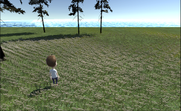

Projects
| Projects | ||
|---|---|---|
|
 Worldbuilding |

Mental Health Database Application |

The Western Trail |
|
Apr. 2022 - Ongoing As part of a personal project to explore using Unity's terrain tools. The player can explore several different regions, with obstacles in the way to points of interest. CURRENTLY ON HIATUS Created on Unity 3D using C# scripting |
Sept. 2023 - Ongoing As part of a final project to create a meaningful application using databases. More details will be written as time goes on. Created with TBD. |
Jan. 2023 - Ongoing As part of coursework to showcase project management concepts and further game development skills. The game allows you to play up to four different save files, playing as the leader of a team of four people surviving from Montreal to Vancouver in a fictional post-apocalyptic scenario. Players will have to manage their resources while travelling and resting and defend themselves from the mutants that wander the land. Created on Unity 3D using C# scripting and database management with SQL and SQLite. |

Personal Portfolio |

Inventory Management App |

AI Capture the Flag |
|
Sept. 2023 - Ongoing A web portfolio to display my projects, skills, and a bio about me to potential employers and viewers. This will be continuously updated as time permits. Created with HTML and CSS. |
Sept. 2022 - Aug. 2023 As part of my work during my 3rd and 4th co-op position to help an IT department automate and manage their assets. End-users would be able to create items, see the amount in stock, take/return assets, view laptop status, USB status, and printer status, and output the data in multiple formats. Created on Microsoft Power Platform using Power Apps, Power Automate, and Power Fx. |
Jan. 2023 - Apr. 2023 As part of a final project to showcase goal-oriented behaviour for agents playing a game of capture the flag with elements of king of the hill. Agents are split into two teams with three different possible roles, can decide what weapon they want to equip, and can decide what action to do. Flags can be captured and control points can be captured to help their team. Created on Unity 3D using C# scripting. |

Tabletop Games E-Commerce Site |

RS Reporting Application |

Online Multiplayer Capture the Flag |
|
Jul. 2022 - Aug. 2022 As part of a final project to create a website with client-side and server-side scripting. Users can login as customers to purchase items and as staff to manage the content as a CMS. All data stored in the database is secure, passwords are encrypted, and input sanitization occurs during form submission. Created with HTML, CSS, PHP, and MySQL. |
Jan. 2022 - Apr. 2022 As part of my work during my 2nd co-op position to help an IT department translate their legacy system AS400 queries into efficient MS SQL queries. Queries were designed with temporary tables in the process to help speed the query up as much as possible. Created with SSRS Report Builder and MS SQL |
Oct. 2021 - Dec. 2022 As part of a final project to showcase basic game development skills and online multiplayer. Users can join a game of capture the flag online up to 4-players. Four weapon choices, two maps, user-friendly UI and pre-game chatroom are available. Created on Unity 3D using C# scripting with the Mirror Networking Asset. |